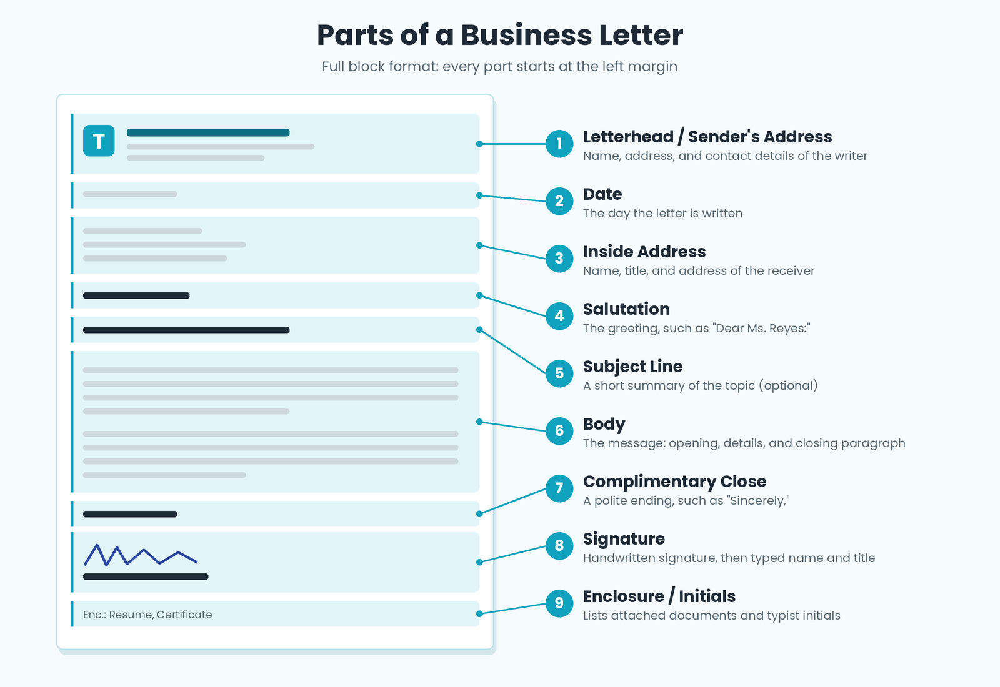

Introduction
Letters remain one of the most important forms of professional and technical communication. A well-structured letter conveys information clearly, maintains a professional tone, and creates a permanent record.

Standard Parts of a Business or Technical Letter
1. Sender's Address / Letterhead
Includes the sender's name, return address, and optionally the company name and logo.
2. Date
The date the letter is written. Written in full: October 11, 2026.
3. Inside Address (Receiver's Block)
The recipient's name, position, company, and address.
4. Salutation
A formal greeting using "Dear [Name]:" with a colon in formal letters.
5. Subject Line (Optional)
A concise statement of the letter's purpose.
6. Body
The main content, usually organized into three parts:
- Introduction — States the purpose of the letter.
- Discussion — Provides details, context, or explanation.
- Conclusion — States the action requested or expected.
7. Complimentary Close
A polite ending phrase. Examples: Sincerely, Yours truly, Respectfully,
8. Signature Block
The sender's handwritten signature, followed by the typed name and job title.
9. End Notations
- Enclosure (Enc.) — Indicates attached documents.
- Copy notation (cc:) — Lists people who received a copy.
- Typist initials — Identifies who typed the letter.
Formatting Styles
- Block Format — All elements are left-aligned. Most common in modern business letters.
- Modified Block — Date, close, and signature are centered or right-aligned.
- Semi-Block — Body paragraphs are indented.
Sample Business Letter
Mark Benedict Selda
Institute of Library and Information System
City College of Calapan
Oriental Mindoro, 5200
October 11, 2026
Prof. Maria Santos
Technical Writing Instructor
City College of Calapan
Oriental Mindoro, 5200
Dear Prof. Santos:
Subject: Submission of Technical Writing Website Project
I am writing to formally submit my technical writing website project for your review. The website presents the seven core lecture topics we studied this semester.
I would appreciate any feedback you may have. Thank you for your guidance throughout this course.
Sincerely,
[Handwritten Signature]
Mark Benedict Selda
BSIS 3B
Enc: Website link
Common Mistakes to Avoid
- Missing date or inside address
- Wrong salutation
- Vague subject line
- Informal or emotional tone
- Missing signature block
- Forgetting to mention enclosures
Self-Check
1. What are the three parts of the body of a letter?
Introduction, Discussion, Conclusion.
2. What is the difference between a salutation and a complimentary close?
Salutation is the greeting at the beginning; complimentary close is the polite ending.
3. What does "Enc." at the bottom of a letter indicate?
Enclosure — attached documents.
References
- Mitante, E. J. L. (n.d.). Types of Technical Reports — Letter Report section [Lecture slides]. City College of Calapan.
- Purdue Online Writing Lab. (n.d.). Writing the basic business letter. Purdue University.